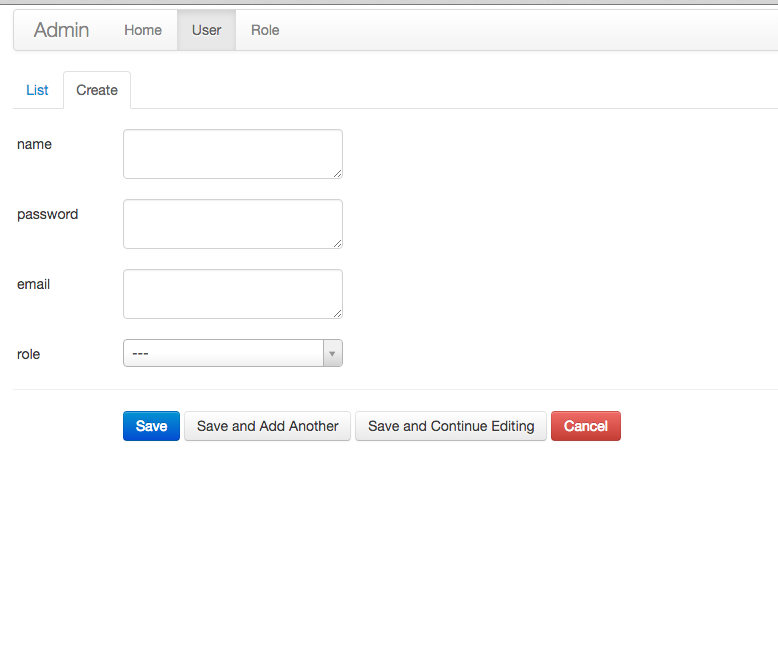
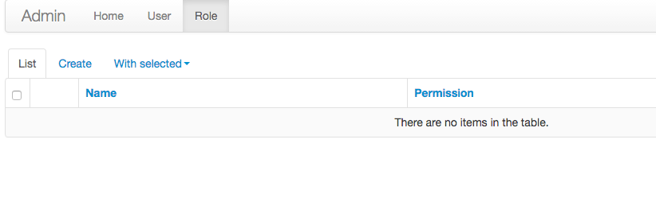

编写 TODO 应用【part002】
设置配置
配置的话，我们全放在 config 目录下，并且按环境划分，因为只使用到开发环境，所以就只设置了开发环境的：
config/init.py
# coding: UTF-8
import os
def load_config(mode=os.environ.get('MODE')):
"""Load config."""
try:
if mode == 'PRODUCTION':
from .production import ProductionConfig
return ProductionConfig
elif mode == 'TESTING':
from .testing import TestingConfig
return TestingConfig
else:
from .development import DevelopmentConfig
return DevelopmentConfig
except ImportError:
from .default import Config
return Config
config/development.py
# coding: utf-8
import os
class DevelopmentConfig(object):
"""Base config class."""
# Flask app config
DEBUG = False
TESTING = False
SECRET_KEY = "sample_key"
# Root path of project
PROJECT_PATH = os.path.abspath(os.path.join(os.path.dirname(__file__), '..'))
# Site domain
SITE_TITLE = "twtf"
SITE_DOMAIN = "http://localhost:8080"
# MongoEngine config
MONGODB_SETTINGS = {
'db': 'the_way_to_flask',
'host': '192.168.59.103',
'port': 27017
}
## 配置运行脚本
到此，我们的应用代码算是写完了，然后就是运行服务器了，还是使用 Flask-Script，所以我们需要配置 manage.py，内容为；
manage.py
#!/usr/bin/env python
# encoding: utf-8
from flask_script import Manager
from flask_script.commands import ShowUrls
from application import create_app
manager = Manager(create_app)
manager.add_option('-c', '--config', dest='mode', required=False)
manager.add_command("showurls", ShowUrls())
if __name__ == "__main__":
manager.run()
运行服务器
pyhton manage.py -c development runserver
当你看到以下语句的时候说明你的服务器运行成功了：
* Running on http://127.0.0.1:5000/ (Press CTRL+C to quit)
添加用户
因为现在数据库中是没有用户的，所以我们需要手动添加一个用户先，在管理后台可以添加：
http://localhost:5000/admin/user/
 
测试功能：
登录：
POST /auth/login HTTP/1.1
Host: localhost:5000
{"username": "zhangsan",
"password": "password"}
响应应该是：
{
"email": "zhangsan@gmail.com",
"name": "zhangsan",
"role": "ADMIN"
}